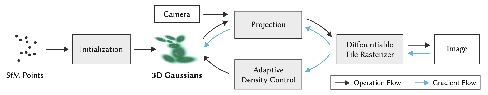
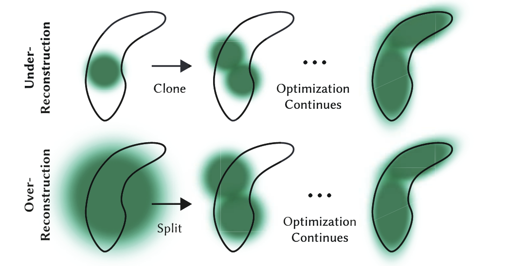

3D Gaussian Splatting
3D Gaussian Splatting (3DGS) is a breakthrough technique in computer graphics and computer vision for novel view synthesis. It emerged as a faster, highly efficient alternative to Neural Radiance Fields (NeRFs). While NeRFs use a neural network to implicitly represent a 3D scene, Gaussian Splatting represents the scene explicitly using millions of tiny, transparent, colored blobs—3D Gaussians.

1. The Geometry: Defining a 3D Gaussian
At its core, the scene is just a point cloud where every point has been expanded into a 3D bell curve (a Gaussian). Mathematically, an unnormalized 3D Gaussian is defined by its center position (mean) and its shape (covariance):
\[G(x) = e^{-\frac{1}{2}(x-\mu)^T \Sigma^{-1} (x-\mu)}\]
- \(x\): Any point in 3D space.
- \(\mu\) (Mean): The \(x, y, z\) coordinates of the Gaussian's center.
- \(\Sigma\) (Covariance Matrix): A 3x3 matrix that determines the shape, size, and rotation of the blob.
The Optimization Trick (Scale and Rotation):
During machine learning optimization, gradient descent can easily break the mathematical rules of a covariance matrix (it must remain positive semi-definite). To prevent this, 3DGS splits the covariance matrix \(\Sigma\) into two separate, easily optimizable components: a Scaling matrix (\(S\)) and a Rotation matrix (\(R\), usually represented as a quaternion).
\[\Sigma = R S S^T R^T\]
2. The Appearance: Color and Opacity
A shape alone doesn't make an image. Each Gaussian also carries parameters for how it looks:
- Opacity (\(\alpha\)): A value between \(0\) and \(1\) determining how transparent the splat is.
- Color via Spherical Harmonics (SH): Instead of assigning a single static RGB color, Gaussians use Spherical Harmonics. This is a mathematical way to encode *view-dependent color* (e.g., a specular highlight that shifts as the camera moves).
3. The Math of "Splatting": 3D to 2D Projection
"Splatting" is the process of squashing these 3D blobs onto your 2D screen so you can see them. When you move the camera, you need to project the 3D covariance matrix (\(\Sigma\)) into a 2D covariance matrix (\(\Sigma'\)).
This is done using a viewing transformation \(W\) (the camera's position and angle) and \(J\), the Jacobian of the affine approximation of the projective transformation:
\[\Sigma' = J W \Sigma W^T J^T\]
This elegant equation is the heart of why 3DGS is so fast. Instead of ray-tracing through a volumetric field (like NeRF), it just squashes the pre-calculated 3D blobs directly onto the 2D viewing plane using standard matrix multiplication.
4. The Rendering: Alpha Blending
Once all the relevant Gaussians are squashed onto the 2D screen, how do we get the final pixel colors?
- Sorting: The Gaussians are sorted extremely rapidly from front to back based on their depth relative to the camera.
- Rasterization: For a given pixel, the algorithm calculates the final color \(C\) by blending the colors (\(c_i\)) of all overlapping Gaussians, weighted by their opacity (\(\alpha_i\)) and the Gaussian formula evaluated at that pixel:
\[C = \sum_{i=1}^{N} c_i \alpha_i \prod_{j=1}^{i-1} (1 - \alpha_j)\]
This is standard alpha blending: it stops accumulating color once the pixel becomes fully opaque (\(\alpha = 1\)).
Adaptive Density Control
When training begins, the scene is usually initialized with a sparse, low-quality point cloud (typically generated by a classical photogrammetry tool like COLMAP). To go from a few thousand dots to millions of highly detailed splats, the algorithm periodically pauses the standard optimization to evaluate the "health" of every Gaussian and decide whether to kill it, duplicate it, or split it.
Here is exactly how the algorithm makes those decisions during the training phase.
The Trigger: View-Space Positional Gradients
To decide if a Gaussian needs help, the algorithm looks at its view-space positional gradient.
In plain English: during the backward pass of training, the optimizer calculates how much the final image would improve if a specific Gaussian were moved slightly in 2D screen space. If a Gaussian has a massive positional gradient, it means the optimizer is violently trying to "yank" it to cover a missing feature. High gradients mean the current geometry is insufficient.
When the algorithm detects these high gradients, it assumes the area is poorly represented and takes one of two actions based on the physical size of the Gaussian.

1. Cloning (Fixing Under-Reconstruction)
The Scenario: A small, localized feature is missing.
The Condition: A Gaussian has a high positional gradient, AND it is physically small.
The Action: The algorithm assumes this small Gaussian is trying to cover empty space nearby but can't stretch far enough. So, it clones the Gaussian. It creates an exact duplicate and shifts the new copy slightly in the direction of the gradient.
*Analogy:* You are painting a wall with a small brush, and the brush isn't covering enough area. Instead of making the brush bigger, you just get a second small brush to paint next to it.
2. Splitting (Fixing Over-Reconstruction)
The Scenario: A sharp edge or detailed texture is blurry.
The Condition: A Gaussian has a high positional gradient, BUT it is physically large.
The Action: The algorithm assumes this large Gaussian is a clumsy "blob" trying to cover a complex detail (like a sharp corner) where it doesn't fit properly. To fix this, it splits the large Gaussian. It deletes the original and replaces it with two smaller Gaussians (typically scaled down by a factor of 1.6).
*Analogy:* You are trying to paint a fine portrait with a massive roller brush. The algorithm takes your roller away and gives you two fine-tipped pens instead.
3. Pruning (Taking out the Trash)
While Cloning and Splitting add millions of Gaussians, the algorithm must also clean up useless ones to save memory and keep rendering fast (often \>100 FPS). It performs Pruning aggressively.
A Gaussian is immediately deleted if:
- It becomes too transparent: If its opacity (\(\alpha\)) drops below a tiny threshold (e.g., \(\alpha < 0.005\)), it has virtually no impact on the final image, so it is removed.
- It gets too big: If the optimizer stretches a Gaussian so much that it covers a massive chunk of the scene, it causes calculation lag and popping artifacts. Any excessively large splats are purged.
The Secret Sauce: Periodic Opacity Reset
If you only run the steps above, the optimizer tends to be lazy. It will stack hundreds of semi-transparent Gaussians on top of each other to form solid objects. This creates ugly "floaters" and artifacts when you move the camera.
To prevent this, the creators of 3DGS added a brutal but effective trick: Every 3,000 iterations, the algorithm forcefully resets the opacity (\(\alpha\)) of *every single Gaussian in the entire scene* back to nearly zero.
This acts as a massive stress test for the scene:
- Suddenly, the whole scene becomes completely transparent.
- Over the next few iterations, the optimizer frantically tries to restore the image.
- Only the Gaussians that are *strictly necessary* to recreate the image will have their opacities optimized back up to solid levels.
- The lazy, unnecessary, stacked Gaussians are left transparent, and on the very next pass, the Pruning step deletes them.
By constantly growing the scene where details are missing (Cloning/Splitting) and violently cutting away the fat (Pruning/Resetting), 3DGS organically grows a highly optimized, explicit 3D representation of the real world.
Projection Matrix
This is a great question. In standard computer graphics (like rendering video games), we *do* use a matrix for perspective projection. But there is a famous "cheat" hidden inside that standard graphics pipeline that makes it fundamentally non-linear, which is why 3D Gaussian Splatting has to invent a workaround (the Jacobian, \(J\)).
Let's look at the original graphics matrix, uncover the hidden non-linear cheat, and then derive exactly how \(J\) is calculated to fix it.
1. The Original Format: The 4x4 Projection Matrix
In traditional rendering (OpenGL/DirectX/Vulkan), you project a 3D point \((x, y, z)\) onto a 2D screen using a \(4 \times 4\) projection matrix.
To make the math work, graphics engines use a trick called Homogeneous Coordinates. They add a fake 4th dimension (\(w\)) to every 3D point, making it \((x, y, z, 1)\).
A simplified Pinhole Camera projection matrix looks like this:
\[P = \begin{bmatrix} f_x & 0 & 0 & 0 \ 0 & f_y & 0 & 0 \ 0 & 0 & 1 & 0 \ 0 & 0 & 1 & 0 \end{bmatrix}\]
*(Where *\(f_x\)* and *\(f_y\)* are the focal lengths).*
Watch what happens when we multiply a 3D point by this matrix:
\[\begin{bmatrix} f_x & 0 & 0 & 0 \ 0 & f_y & 0 & 0 \ 0 & 0 & 1 & 0 \ 0 & 0 & 1 & 0 \end{bmatrix} \begin{bmatrix} x \ y \ z \ 1 \end{bmatrix} = \begin{bmatrix} f_x \cdot x \ f_y \cdot y \ z \ z \end{bmatrix}\]
Notice the last row. The \(w\) component of our vector has magically become equal to \(z\) (the depth).
2. The Non-Linear "Cheat" (Perspective Divide)
The matrix multiplication above was perfectly linear. But the resulting vector \(\begin{bmatrix} f_x \cdot x, & f_y \cdot y, & z, & z \end{bmatrix}\) is not a 2D pixel coordinate yet.
To get the final 2D pixel on the screen, standard graphics hardware does a forced, non-matrix step called the Perspective Divide. It divides the \(x\) and \(y\) components by the \(w\) component (which, remember, is now \(z\)):
\[u_{pixel} = \frac{f_x \cdot x}{z}\]
\[v_{pixel} = \frac{f_y \cdot y}{z}\]
This division is what breaks linearity.
In mathematics, a linear transformation means if you double the input, you double the output. But look at perspective: if an object moves twice as far to the right (\(2x\)) AND twice as deep into the scene (\(2z\)), its screen coordinate becomes \(\frac{2x}{2z}\), which simplifies right back to \(\frac{x}{z}\). The object moved massively in 3D space, but its 2D screen position didn't change at all. That is the definition of non-linear geometry.
Why this matters for Gaussians: We can push a single *point* through a non-linear division step easily. But \(\Sigma\) is a *covariance matrix* describing a 3D probability cloud. You cannot just divide a matrix by a coordinate variable. It is mathematically undefined. We need a purely linear matrix that fakes this division effect.
3. Deriving \(J\): The Calculus of Faking It
Since we cannot use the exact non-linear equation, we use Calculus (a Taylor Series approximation) to find the "best fit" linear transformation matrix.
We look at the exact center of our Gaussian at coordinates \((x, y, z)\). At this specific microscopic point, we ask: *"If I move just a tiny bit in X, Y, or Z, exactly how fast do my 2D screen coordinates *\(u\)* and *\(v\)* change?"*
We find this by taking the partial derivatives of our perspective equations:
\[u = \frac{f_x \cdot x}{z}\]
\[v = \frac{f_y \cdot y}{z}\]
The Jacobian matrix \(J\) is simply a grid containing all these derivatives:
\[J = \begin{bmatrix} \frac{\partial u}{\partial x} & \frac{\partial u}{\partial y} & \frac{\partial u}{\partial z} \ \frac{\partial v}{\partial x} & \frac{\partial v}{\partial y} & \frac{\partial v}{\partial z} \end{bmatrix}\]
Let's calculate them one by one using basic calculus rules.
For the first row (changes to \(u\)):
- \(\frac{\partial u}{\partial x}\): The derivative of \(\frac{f_x \cdot x}{z}\) with respect to \(x\). Since \(x\) is the variable, the result is just the constant attached to it: \(\frac{f_x}{z}\)
- \(\frac{\partial u}{\partial y}\): There is no \(y\) in the equation for \(u\). So, changing \(y\) does nothing to \(u\). The derivative is \(0\).
- \(\frac{\partial u}{\partial z}\): The derivative of \(f_x \cdot x \cdot z^{-1}\) with respect to \(z\). Using the power rule (bring down the \(-1\), subtract \(1\) from the exponent), we get: \(-\frac{f_x \cdot x}{z^2}\)
For the second row (changes to \(v\)):
We do the exact same thing for the \(v\) equation.
- \(\frac{\partial v}{\partial x}\): No \(x\) in the equation. Derivative is \(0\).
- \(\frac{\partial v}{\partial y}\): The derivative of \(\frac{f_y \cdot y}{z}\) with respect to \(y\) is \(\frac{f_y}{z}\).
- \(\frac{\partial v}{\partial z}\): The derivative of \(f_y \cdot y \cdot z^{-1}\) is \(-\frac{f_y \cdot y}{z^2}\).
The Final Result:
Plug those derivatives back into the grid, and you get the exact Jacobian matrix used in the 3D Gaussian Splatting source code:
\[J = \begin{bmatrix} \frac{f_x}{z} & 0 & -\frac{f_x \cdot x}{z^2} \ 0 & \frac{f_y}{z} & -\frac{f_y \cdot y}{z^2} \end{bmatrix}\]
This \(J\) matrix is a perfectly linear, \(2 \times 3\) matrix. It perfectly mimics the non-linear "squash" of perspective projection, but because it is a matrix, it can be cleanly multiplied against the covariance matrix \(\Sigma_{cam}\) using \(\Sigma' = J \Sigma_{cam} J^T\).